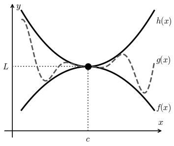

Lesson 10: The Squeeze Theorem
Suppose \(f(x) \le g(x) \le h(x)\) for all \(x\) near \(c\).
The Squeeze Theorem
Idea: \(g(x)\) is trapped between two functions heading to the same value, so it must head there too.

Evaluate \(\displaystyle\lim_{x \to 0} x^2 \sin\left(\frac{1}{x}\right)\).
We cannot plug in 0, and \(\sin\left(\frac{1}{x}\right)\) oscillates. But sine is always between \(-1\) and \(1\).
Multiply by \(x^2\), which is positive.
Since \(\displaystyle\lim_{x \to 0} \left(-x^2\right) = 0\) and \(\displaystyle\lim_{x \to 0} x^2 = 0\), the Squeeze Theorem gives the answer.
A Sample Exam Problem
State the Squeeze Theorem. Include a graph to support your answer.
Suppose \(f(x) \le g(x) \le h(x)\) for all \(x\) near \(c\). If \(\displaystyle\lim_{x \to c} f(x) = \lim_{x \to c} h(x) = L\), then \(\displaystyle\lim_{x \to c} g(x) = L\). The graph at the top of this page supports it.